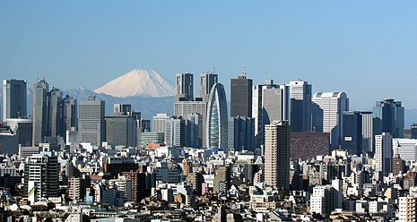
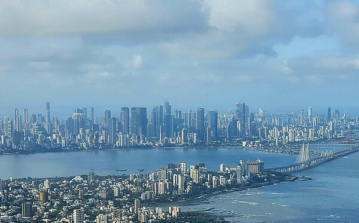

The United States is a highly developed/advanced mixed economy.[35][36][37] It is the world's largest economy by nominal GDP, and the second-largest by purchasing power parity (PPP) behind China

China has an upper middle income,[30] developing, mixed, socialist market economy incorporating industrial policies and strategic five-year plans.

The economy of Germany is a highly developed social market economy.[21] It has the largest national economy in Europe, the third-largest by nominal GDP in the world, and fifth by GDP (PPP).

The economy of Japan is a highly developed/advanced social market economy, often referred to as an East Asian model
The economy of India has transitioned from a mixed planned economy to a mixed middle-income developing social market economy with notable public sector in strategic sectors.
The economy of the United Kingdom is a highly developed social market economy.[34][35][36] It is the sixth-largest national economy in the world measured by nominal gross domestic product (GDP)